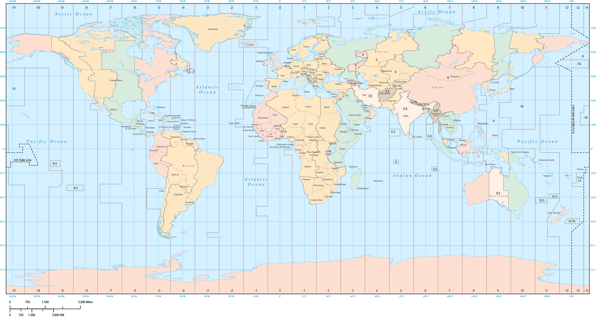

<%= tzs[-11] ? tzs[-11].count : 0 %>
<%= tzs[-10] ? tzs[-10].count : 0 %>
<%= tzs[-9] ? tzs[-9].count : 0 %>
<%= tzs[-8] ? tzs[-8].count : 0 %>
<%= tzs[-7] ? tzs[-7].count : 0 %>
<%= tzs[-6] ? tzs[-6].count : 0 %>
<%= tzs[-5] ? tzs[-5].count : 0 %>
<%= tzs[-4] ? tzs[-4].count : 0 %>
<%= tzs[-3] ? tzs[-3].count : 0 %>
<%= tzs[-2] ? tzs[-2].count : 0 %>
<%= tzs[-1] ? tzs[-1].count : 0 %>
<%= tzs[0] ? tzs[0].count : 0 %>
<%= tzs[1] ? tzs[1].count : 0 %>
<%= tzs[2] ? tzs[2].count : 0 %>
<%= tzs[3] ? tzs[3].count : 0 %>
<%= tzs[4] ? tzs[4].count : 0 %>
<%= tzs[5] ? tzs[5].count : 0 %>
<%= tzs[6] ? tzs[6].count : 0 %>
<%= tzs[7] ? tzs[7].count : 0 %>
<%= tzs[8] ? tzs[8].count : 0 %>
<%= tzs[9] ? tzs[9].count : 0 %>
<%= tzs[10] ? tzs[10].count : 0 %>
<%= tzs[11] ? tzs[11].count : 0 %>
<%= tzs[12] ? tzs[12].count : 0 %>